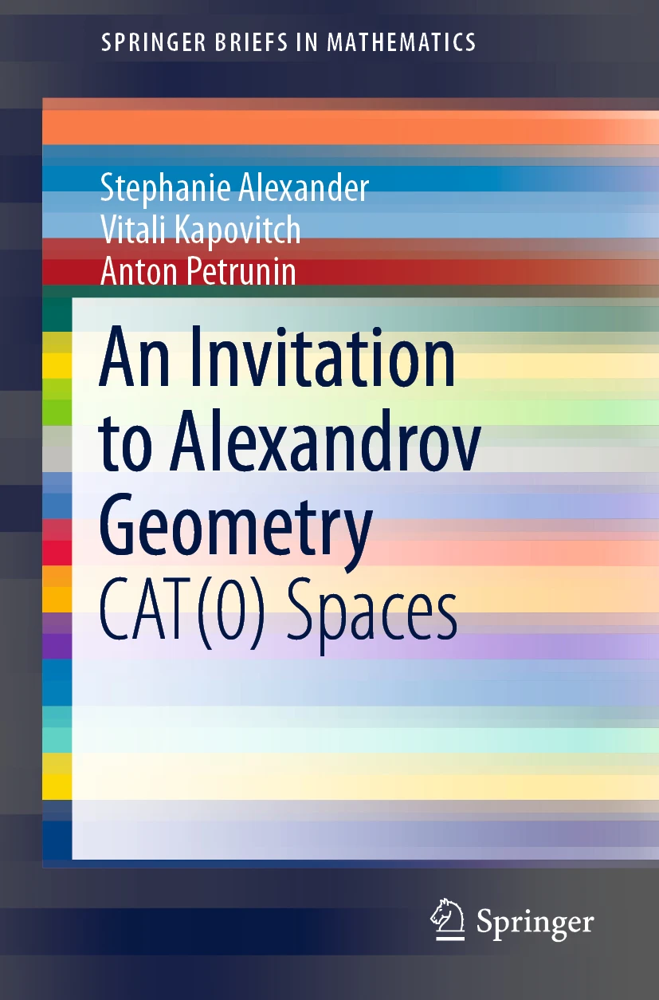

An invitation to Alexandrov geometry: CAT(0) spaces

Here you can download our book
The source files can be downloaded from the project page on GitHub; the final publication is available at Springer via DOI:
10.1007/978-3-030-05312-3.
An older (CC
BY-SA)-version is available at arXiv:1701.03483.
The idea is to demonstrate the beauty and power of Alexandrov
geometry by reaching interesting applications and theorems with a
minimum of preparation.
These notes arise as an offshoot of the book on Alexandrov
geometry we have been writing for a number of years. The notes
were shaped in a number of lectures given by the third author to
undergraduate students at different occasions
at the MASS
program at Penn State University and the Summer
School “Algebra and Geometry” in Yaroslavl.
Chapter 1 includes the necessary preliminaries.
In Chapter 2, we discuss the Reshetnyak gluing theorem and apply
it to a problem in billiards which was solved by Dmitri Burago,
Serge
Ferleger and Alexey Kononenko.
In Chapter 3, we discuss the Hadamard–Cartan globalization
theorem, and apply it to the construction of exotic aspherical
manifolds
introduced by Michael Davis.
In Chapter 4, we discuss examples of Alexandrov spaces with
curvature bounded above. This chapter is based largely on work of
Samuel
Shefel on nonsmooth saddle surfaces.
Misprints in the published version
- The numbers in some citations are shifted by 1; at least one citation is missing.
- page 34--35, the patchwork along a curve (3.2.2) has to be formulated for local geodesics only; minor changes in the proof are required.
- page 44, line \(-4\). The following
"By the globalization theorem (3.3.1), any proper length CAT(0) space is contractible.
Therefore all proper..."
has to be changed to
"By 2.2.6, any proper length CAT(0) space is contractible. Therefore, by the globalization theorem (3.3.1), all proper..."
- page 53, line 15: \(\hat{\varphi^{-1}}(W)\) \(\to\) \(\hat\varphi^{-1}(W)\)
- page 63, lines 8--9 (Exercise 4.8.1): closed set bounded by a Lipschitz hypersurface \(\to\) closed subgraph of a Lipschitz function \(f\colon \mathbb{R}^{m-1}\to\mathbb{R}\).